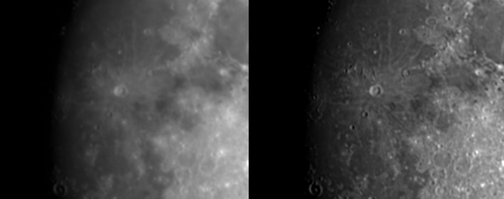
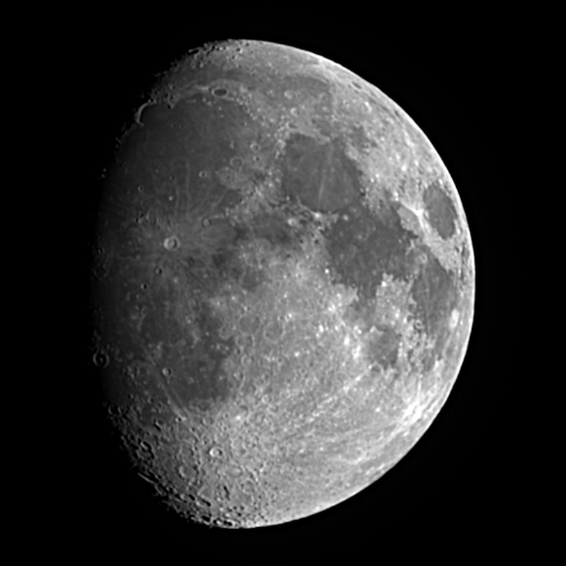
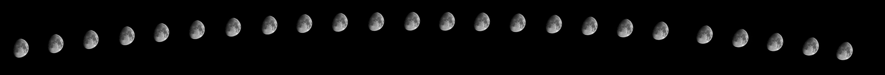

Night log · Wednesday 21 October 2026
The Moon: lucky imaging and an arc across the sky
The plan
A clear evening and a bright Moon. That's bad news for faint nebulae, but a fine chance to photograph the Moon itself. It was 79% lit and about 11 days old (a waxing gibbous), climbing to 28° due south by 21:20. The back garden's view south is blocked by the house, so the scope went out the front on its plain tripod, the same spot as the sunspot session. The only snag there is a street light not far from where the Moon was.
- Captured
- 20:28–22:22
- Frames
- 180 in bursts + 120 for the arc
- Exposure
- 13 ms · gain 0
- Filter
- IR cut
- Mount
- Tripod, alt-az
Setting up
I sent the scope to the Moon from the phone app, then closed the app so Claude could take over through the scope's Alpaca connection. Two test frames set the exposure. At 2 ms the Moon was dim, and at 10 ms its brightest highlands were close to the camera's limit, so it settled on 13 ms at the lowest gain. The Moon is so bright that there's no need for the long exposures nebulae need.
The app had put the Moon near the top of the frame. To centre it, Claude nudged the mount 20 arcminutes north and then 20 arcminutes east, measuring how far the Moon moved in the picture each time. That told it which way the camera was turned, and the next move put the Moon within six pixels of the centre. A focus sweep across nine positions, scoring how crisp the crater edges looked, settled on 1272, a little further out than for the stars.
Why stack the Moon?
The Moon is bright enough for a single frame, so I asked whether stacking was worth it. It is. The air over the house is never still, so every frame is blurred slightly differently. The scope took 180 frames in 13 minutes. Claude kept the sharpest quarter, lined them up on the craters, and averaged them. Averaging cancels most of the camera noise, which means the result can be sharpened hard without turning grainy. This is lucky imaging, the same trick we used on the Sun.

One detail matters with this kind of mount. On a plain tripod the scope tracks up-down and left-right rather than following the sky's own rotation, so the Moon slowly turns in the frame, about one degree every ten minutes tonight. Before stacking, each frame was turned by its own angle, worked out from the time it was taken, plus the tilt of the Moon's own axis, so the finished picture has lunar north straight up.

Some things to look for: the dark oval of Mare Crisium near the right-hand edge, the bright rayed crater Tycho towards the bottom, and Copernicus close to the shadow line on the left. The craters are sharpest along that shadow line, where the Sun is low in the lunar sky and every rim casts a long shadow. Towards the right the Sun is high overhead, so the surface looks flat and the bright and dark ground shows instead. It's worth comparing with day one's Moon, a single frame taken from the app.
One check: I wondered if stacking even more frames would help, so we tried the sharpest quarter of all 301 frames from the evening. It came out softer. The extra frames were spread over two hours, during which the shadows shifted and the air got worse as the Moon sank. More frames only help when they come from one short stretch.
A string of moons
For a picture showing the Moon moving, the wide camera was out: from the front of the house it sees the street light. But the sky around the Moon is black, so we built the wide view afterwards instead. The main camera took three frames every two minutes, with tracking keeping the Moon centred. For each frame, Claude worked out from its timestamp exactly where the Moon was in the sky, and placed it at that spot on a big black canvas, as a fixed camera facing south would have seen it.

The gap came halfway. The scope parked for what we thought was the end of the night, and when we went back to the Moon it wasn't there. The compass was out again, about 60° to the right. Rather than recalibrate it, I swung the scope round by hand and centred the Moon with the viewer in the app, and the shots carried on until cloud rolled in at 22:22.
What next
This Moon is the first frame of a bigger project: one sharp stack for every half day of the Moon's age, then an animation of a whole cycle of phases. The scope now has its own scheduler that checks the forecast each morning and messages me on the day, and again an hour before setting up, when a night suits the Moon. On those nights it finds, focuses, shoots and stacks by itself. Autumn is a good time for the waning half, when the Moon is high before dawn. The thin evening crescents will have to wait for spring, when they stand higher in the sky.